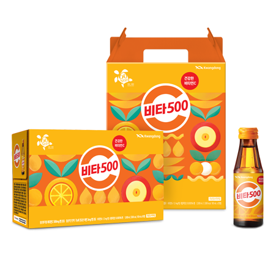
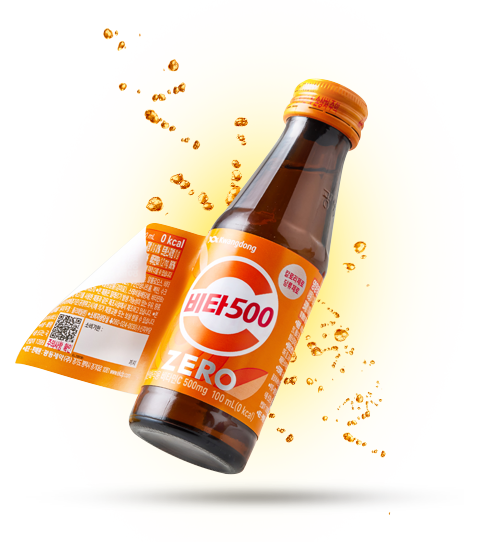
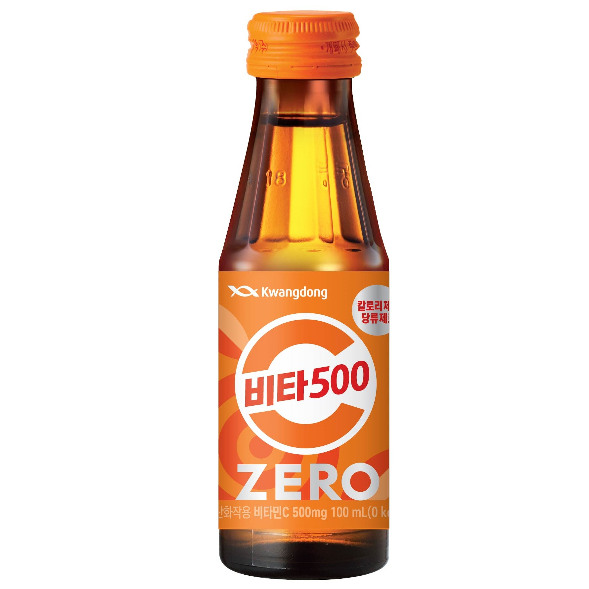

건강하게 마시는 비타민C 건강드링크
광동제약 비타500

- 남녀노소부터 임산부까지
- 비타민C 500mg을 온전하게
- 안전하고 맛있는 건강한 비타민C
제로와 함께 더 건강하게 챙기는 비타민C
비타500 ZERO

- 칼로리 제로! 당류 제로!
- 제로에 비타민C 500mg 가득!
- 다른 제로들과 차원이 다른 비타500 제로!
비타민C는 액상으로 섭취할 때 흡수가 가장 빠릅니다.

- "여러가지 제형(액상, 캡슐,정제)의
- 비타민C 흡수율을 확인한 인체적용시험 결과,
- 액상 제형에서 비타민C가 더 잘 흡수된다는 것을 확인하였습니다."